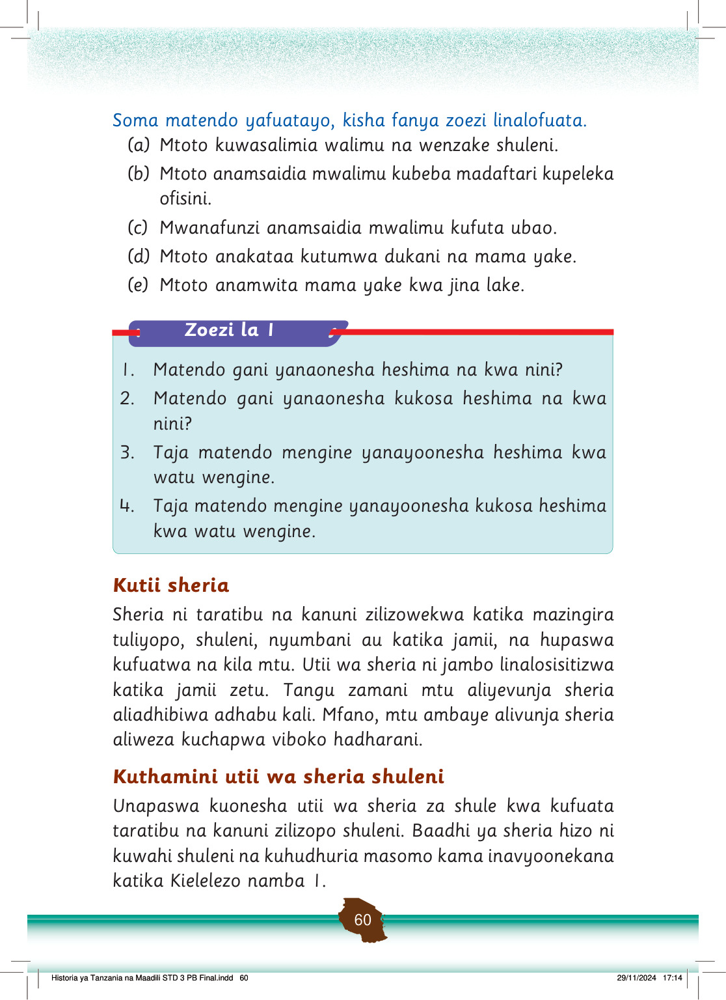

Soma matendo yafuatayo, kisha fanya zoezi linalofuata.
(a) Mtoto kuwasalimia walimu na wenzake shuleni.
(b) Mtoto anamsaidia mwalimu kubeba madaftari kupeleka ofisini.
(c) Mwanafunzi anamsaidia mwalimu kufuta ubao.
(d) Mtoto anakataa kutumwa dukani na mama yake.
(e) Mtoto anamwita mama yake kwa jina lake.
Zoezi la 1
1. Matendo gani yanaonesha heshima na kwa nini?
2. Matendo gani yanaonesha kukosa heshima na kwa nini?
3. Taja matendo mengine yanayoonesha heshima kwa watu wengine.
4. Taja matendo mengine yanayoonesha kukosa heshima kwa watu wengine.
Kutii sheria
Sheria ni taratibu na kanuni zilizowekwa katika mazingira tuliyopo, shuleni, nyumbani au katika jamii, na hupaswa kufuatwa na kila mtu.
Utii wa sheria ni jambo linalosisitizwa katika jamii zetu.
Tangu zamani mtu aliyevunja sheria aliadhibiwa adhabu kali.
Mfano, mtu ambaye alivunja sheria aliweza kuchapwa viboko hadharani.
Kuthamini utii wa sheria shuleni
Unapaswa kuonesha utii wa sheria za shule kwa kufuata taratibu na kanuni zilizopo shuleni.
Baadhi ya sheria hizo ni kuwahi shuleni na kuhudhuria masomo kama inavyoonekana katika Kielelezo namba 1.
Historia ya Tanzania na Maadili STD 3 PB Final.indd 60
29/11/2024 17:14